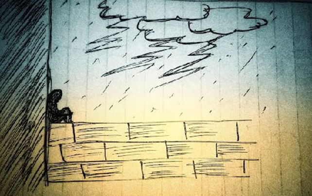

It rained all day, incessantly. So there was no power, and so no phone. It was just me, me and my thoughts. I sat on the cold wet staircase, hugging my knees to my chest, occupying as small a space as possible. Seemed like I was scared of something. Sitting there I listened to the sloosh of a running river. Silence after the rain filled the horizon which was now lined by red streaks. With that tranquillity, the world seemed huge, yet I felt alone.
Suddenly I felt a tap on my shoulder. “Hey, do you remember me? I’m the best one you ever had.” Another voice tore the atmosphere, “oh stop! See me I'm the one who made you strong.” Someone said “ I'm the one who can make you cry with joy”, “ I'm the one who can make you wanna kill yourself.” And soon there were so many voices. It was complete pandemonium. It was a mess. I hate this. I hate being surrounded by so much stuff, so many people, and so many thoughts. I hate maximality. I adore only a few simple things.
But now I was surrounded with chaos, quarrels. They were ripping me into pieces. I shouted, “Who are you? Leave me alone.” They got surprised and backed off “Who are we!!We are ones who made who you are today. We are the ones you carry until your last breath. We are the ones who keep you alive. We are the memories you behold. If we leave, you will be nothing less than dead. Would you like us to leave. I shook my head, a ‘no’. I chose to cling to the one which made me sad, I cried. Then I laughed holding on to another. Suddenly I felt as an unconquerable will, zealous. All those memories which made me feel blessed rushed in. Thank you!!! I said feeling the life in me and went on to make few more memories.
Isn't it true. Memories make us feel alive. It’s hard to imagine how awkward life would be without memories. They make us, they break us. They build very bit of personality of ours. I would say we are a collective mass of memory. I couldn't agree more. ‘cause every action of ours is based on them. The other day he cheated me, today I don't believe anyone. Yesterday people refused to love me back. Today I'm afraid to love. That day they laughed at me for being me. Today I pretend to be someone else.
Those memories with our dear ones. The memories of those we once held close to our hearts and those who now live only in memories. The memories of the hands we held, those which slipped off and those we left. But we still have them, deep inside us. When the wind blows with an indecipherable smell of the past I remain perplexed. The memories of joy, the memories of crying. The memories which we never wanted to be a memory. Memories where we wanted the time to stand still. Those hidden smiles, stolen looks, happy accidents, serendipitous co-incidences, unconfessed loves, unknown wins, known failures. The book of evocation opening randomly is unceasing.
They say “leave the past and move ahead.” But the road we walked upon is the biggest lesson on which we build ourselves. It is always important to remember how we once were, and what our life experiences have taught us. It makes us feel blessed, moreover feel humbled. Most of us leave the happy memories and cling to the bad ones, as I did. But remember what Vex King told “One day you will feel gratitude towards those that broke you. Everything they put you through will show you what you are capable of achieving in the world. Through the healing process, you will learn how to love yourself and others.”
After all, nothing lasts. Events end, moments end, and feelings end. Someday we will end too. But we will continue to live in someone's memory at least for a while. Make that memory worth appreciating.
You star, thank you for reading. With love,
Aishwarya B
(PS: Heartfelt thanks to Anusha, Bindu, Lee, Chaitanya, Jitesh, Arman for your kind words and support.)